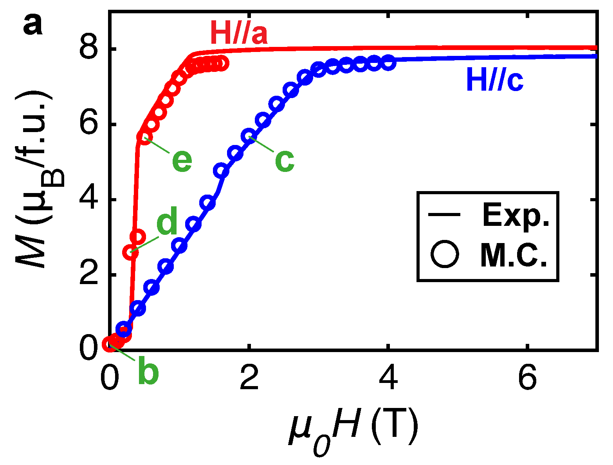

Figure cleanup and digitizer
Clean up figure images and extract numerical data from plots, or measure distances and angles on map-like images. Crop, remove backgrounds, and correct perspective in Figure cleanup, then calibrate axes or a scale bar and click to digitize or measure. A zoomed cursor preview helps you align precisely.
Disclaimer: These tools are experimental and may still have bugs/errors. If you spot one, please tell me!
1. Load image
A sample plot loads automatically when the page opens. You can replace it by uploading an image, pasting from the clipboard (⌘/Ctrl + V anywhere on this page), or loading one from a URL.

2. Calibrate, edit, and digitize
Adjust orientation, perspective, lens distortion, moiré reduction, and crop before calibrating. Changes preview live on the canvas — use the controls at right (scroll if needed), then Apply edits below the image to bake them in. Calibration points move with the image when you apply.
Click two reference points on the Y axis and two on the X axis (in any order), then enter their values to the right. When all four are set, switch to Add points and click inside the plot to digitize data, or use the Auto digitize controls below the image. Right-click an added point (or use the table) to remove it. Error-bar endpoints can be dragged or nudged; use the point table to add a manual error bar when automatic detection is ambiguous.
Calibrate X and Y, drag a rectangle around the data area and another around the colorbar, then convert colors to intensity. Pixels outside the data rectangle or too far from the calibrated colorbar become NaN.
Optionally set C₁ and C₂ on two labeled colorbar ticks and enter their values. When both are set, they calibrate the color scale instead of the colorbar ends; this is useful when the true endpoints are not labeled.
Click the two endpoints of a known-length scale bar (or any two points whose real separation you know), then enter their real-world distance to the right. Switch to Distance or Angle mode to measure with two or three clicks. Right-click any measurement endpoint (or use the table) to remove it.
3. Reconstructed 2D data
No conversion yet.
Remove pixels
Select a cleanup region, then press Delete/Backspace or use Delete selection to make those pixels transparent.
Apply & export
Apply edits bakes the current preview into the working image. Reset preview clears pending slider and crop changes only. Revert to original restores the image exactly as it was when loaded and clears all calibration points and measurements.
No pending edits.
Auto digitize
For the most robust marker detection, choose Marker kernel and drag a tight rectangle around one complete marker. The kernel is correlated across the selected plot region; the match threshold controls accepted peaks and minimum spacing merges nearby responses. Choose either the local response maximum or its center of mass for each marker position. Color and line modes remain available. Vertical error-bar tracing is a separate optional pass after marker centers are found. Pick the color shared by the marker and bars before enabling it. Automatic results can still be corrected by dragging either end cap or using add error in the table.
3. Digitized points
| # | X | Y | Error bar |
|---|
3. Measurements
| # | Type | Value | Endpoints (px) |
|---|